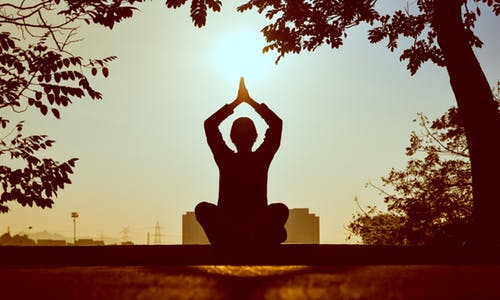

Meditation

Meditation is a practice where an individual uses a technique – such as mindfulness, or focusing the mind on a particular object, thought or activity – to train attention and awareness, and achieve a mentally clear and emotionally calm and stable state. Scholars have found meditation difficult to define, as practices vary both between traditions and within them. Meditation has been practiced since antiquity in numerous religious traditions, often as part of the path towards enlightenment and self realization. Some of the earliest written records of meditation (Dhyana), come from the Hindu traditions of Vedantism. Since the 19th century, Asian meditative techniques have spread to other cultures where they have also found application in non-spiritual contexts, such as business and health. Meditation may be used with the aim of reducing stress, anxiety, depression, and pain, and increasing peace, perception, self-concept, and well-being. Meditation is under research to define its possible health (psychological, neurological, and cardiovascular) and other effects. Meditation or “dhyana” is an extreme form of concentration. It allows your mind to focus on one thing and detaches you from all worldly things. Meditation is one of The 8 Limbs of Yoga. It is believed that all divine powers live in the heart and meditation is the only route to dive deep into your heart. Though meditation is not an answer to all your problems, but it sure results in a harmony between body and soul. To reap the full benefits of meditation, regular practice is required.
To mediate you must sit comfortably and start focusing on one thought, object or even your breathing. Initially your mind will wander. Do not try to stop it. Let it go. Do not suppress any feelings or thought, but let these pass. Once done your mind will automatically return to your object of focus. Now your mind will be at peace. With time your mind will wander less and within no time you will enter into a phase of deep concentration. Mediation will bring you to the present.
The US National Center for Complementary and Integrative Health states that "Meditation is a mind and body practice that has a long history of use for increasing calmness and physical relaxation, improving psychological balance, coping with illness, and enhancing overall health and well-being." A 2014 review found that practice of mindfulness meditation for two to six months by people undergoing long-term psychiatric or medical therapy could produce small improvements in anxiety, pain, or depression. In 2017, the American Heart Association issued a scientific statement that meditation may be a reasonable adjunct practice to help reduce the risk of cardiovascular diseases, with the qualification that meditation needs to be better defined in higher-quality clinical research of these disorders. Low-quality evidence indicates that meditation may help with irritable bowel syndrome, insomnia, cognitive decline in the elderly, and post-traumatic stress disorder.

Did you know that there are as many meditation techniques as there are sports? And the only way to find out the best
types of meditation for you is to try them.
As you may know, meditation has dozens of benefits, and everybody is doing it. You look for information online or on a
bookstore, and see that there are a LOT of different styles of meditation. You wonder which way is best for you.
This is a very important question. Different types of meditation have different benefits. Some of them will work better
for you than others—just like different sports or diets work better for some people than for others.
There are literally hundreds—if not thousands—of types of meditation, so here I will explore only the most popular ones.
The purpose of this article is to help you experiment different meditation techniques, and find the ones that works best
for you.
Finding the right style for you, and practicing it with the right approach, is one of the three essential Pillars of
Meditation.
There is no cookie-cutter approach to meditation. You need to experiment many, and find the one that works best for your
unique needs and personality. The type of meditation that is most helpful against anxiety, for instance, is not
necessarily the best one against depression or for spiritual awakening.